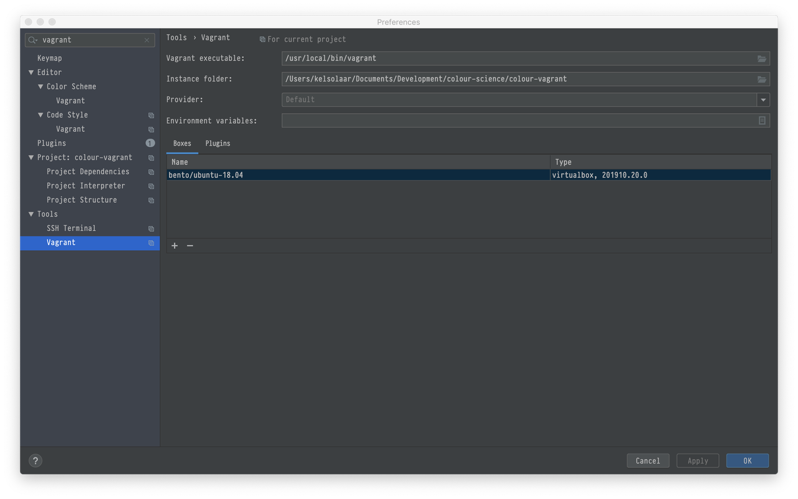
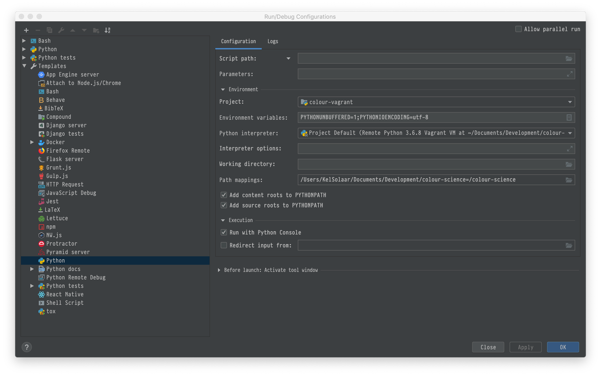
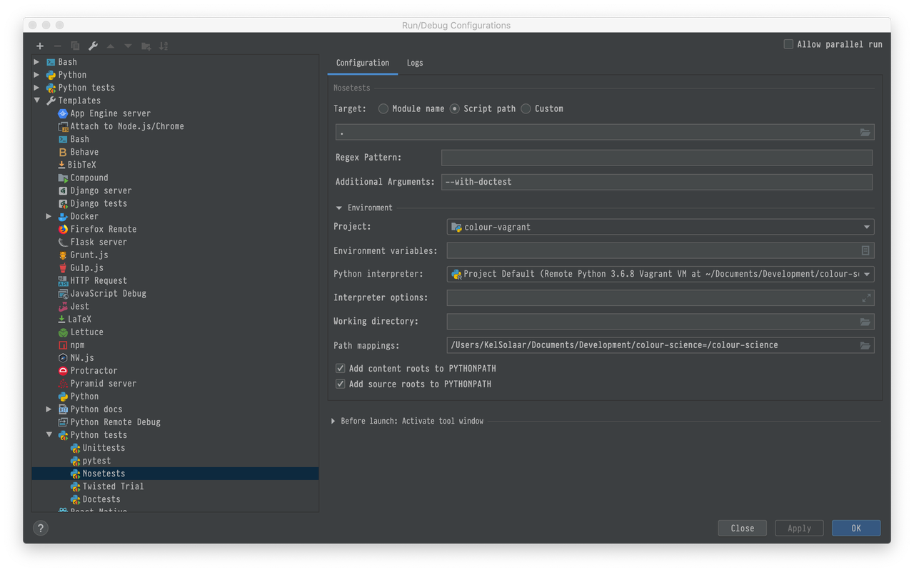

PyCharm, Vagrant, Ansible & Poetry
Installing the whole development toolchain for Colour roughly means deploying:
... and too many things I just don't remember!
I decided to see how I could make that setup a bit more portable and easier to deploy.
That's where Vagrant kicks in along PyCharm, Ansible and Poetry!
The following guide assume that you have that you have PyCharm installed and are using macOS, although it should pretty much be platform agnostic.
Development Workspace Creation
On your local filesystem, in your development workspace, create a directory
colour-scienceandcdinto it:
Clone the colour-vagrant repository and initialise the submodules:
$ git clone git://github.com/colour-science/colour-vagrant.git $ cd colour-vagrant $ git submodule update --init --recursive
-
You should now have a
colour-vagrantdirectory nested into thecolour-scienceone.Let's open the
colour-vagrantdirectory into PyCharm.
Vagrant Installation
We will loosely follow Jetbrain's PyCharm Documentation.
Install VirtualBox.
Install Vagrant.
Install XQuartz: This is the X11 display server for macOS. The virtual machine will export the display to it so that you can see the figures from Matplotlib.
-
VirtualBox directories syncing performance degrades quickly with large number of files.
As a result the directories syncing is done with NFS.
You will however be asked for your macOS password at each virtual machine spin up because Vagrant needs to modify configuration files on the macOS host.
In order to avoid that and following the Vagrant Documentation, you can edit your macOS
/etc/sudoersfile and append the following content:Cmnd_Alias VAGRANT_EXPORTS_ADD = /usr/bin/tee -a /etc/exports Cmnd_Alias VAGRANT_NFSD = /sbin/nfsd restart Cmnd_Alias VAGRANT_EXPORTS_REMOVE = /usr/bin/sed -E -e /*/ d -ibak /etc/exports %admin ALL=(root) NOPASSWD: VAGRANT_EXPORTS_ADD, VAGRANT_NFSD, VAGRANT_EXPORTS_REMOVE
PyCharm Vagrant Configuration
The canonical way is to use Vagrant from the command line as described in Vagrant Documentation, but here we will leverage the PyCharm integration.
Set the
Vagrant Executablefield to your Vagrant executable, e.g./usr/local/bin/vagrant. This should not be required asvagrantshould be enough, but I encountered issues lately.Set the
Instance Folderfield to yourcolour-vagrantdirectory.Add a new Vagrant box to PyCharm in the
Boxestab and use the following image: bento/ubuntu-18.04
Your configuration screen should be approximately as follows:
Vagrant Up
With everything setup, hit the PyCharm --> Tools --> Vagrant --> Up
menu item to spin up the virtual machine.
You can go grab a coffee, the initial provisioning will take roughly 45 minutes.
If the provisioning ended smoothly, you should have the following elements available:
-
The following repositories cloned into the
colour-sciencedirectory right next to thecolour-vagrantone: Remote Python environments installed into the virtual machine at the following location with all the dependencies needed:
$ cd /home/vagrant/.cache/pypoetry/virtualenvs $ ls -l total 40 drwxrwxr-x 6 vagrant vagrant 4096 Nov 3 09:45 awesome-colour-xc1lGgeX-py3.6 drwxrwxr-x 8 vagrant vagrant 4096 Nov 3 09:58 colour-analysis-ztt4I_b6-py3.6 drwxrwxr-x 7 vagrant vagrant 4096 Nov 3 09:55 colour-checker-detection-LJan8R0H-py3.6 drwxrwxr-x 8 vagrant vagrant 4096 Nov 3 10:07 colour-dash-yRMdyS1F-py3.6 drwxrwxr-x 7 vagrant vagrant 4096 Nov 3 10:01 colour-datasets-68eTMDT3-py3.6 drwxrwxr-x 8 vagrant vagrant 4096 Nov 3 10:05 colour-demosaicing-Me5Z4P5l-py3.6 drwxrwxr-x 8 vagrant vagrant 4096 Nov 3 10:11 colour-hdri--Cpkjfr--py3.6 drwxrwxr-x 8 vagrant vagrant 4096 Nov 3 09:52 colour-O_tqvl_6-py3.6 drwxrwxr-x 6 vagrant vagrant 4096 Nov 3 10:12 colour-science.org-k8ouBR-B-py3.6 -rw-rw-r-- 1 vagrant vagrant 520 Nov 3 10:12 envs.toml
PyCharm Environment Configuration
-
Add the various remote Python interpreters you intend to use to PyCharm the Configure a remote interpreter using Vagrant guide:
/home/vagrant/.cache/pypoetry/virtualenvs/colour-O_tqvl_6-py3.6/bin/python
/home/vagrant/.cache/pypoetry/virtualenvs/colour-demosaicing-Me5Z4P5l-py3.6/bin/python
...
-
Add the paths mappings from the macOS host to the virtual machine in the
Defaultsconfigurations, in my case the mappings are as follows:/Users/KelSolaar/Documents/Development/colour-science = /colour-science
Your Run/Debug configuration screen should be approximately looking like that:
Usage
SSH Connection & Display
Accessing the virtual machine is done by using
PyCharm --> Tools Start SSH session... menu item.
However if you want to be able to export the display and see the figures you
will have to manually ssh into the virtual machine:
Password is vagrant.
You will also need to add the virtual machine to the X11 hosts by issuing the following command on the macOS host:
Jupyter Notebooks
The Jupyter Notebooks server is started as follows:
Then you can access it on the macOS host at the following url: http://localhost:8888/
Remote Python Environments & Interpreters
You can activate the remote Python environments in the virtual machine by issuing those commands:
For Colour:
For Colour - Demosaicing:
$ colour-demosaicing Using virtualenv: /home/vagrant/.cache/pypoetry/virtualenvs/colour-demosaicing-Me5Z4P5l-py3.6
A full list is available as follows:
$ alias | grep colour-science alias awesome-colour='cd /colour-science/awesome-colour && poem' alias colour='cd /colour-science/colour && poem' alias colour-analysis-three.js='cd /colour-science/colour-analysis-three.js && poem' alias colour-checker-detection='cd /colour-science/colour-checker-detection && poem' alias colour-dash='cd /colour-science/colour-dash && poem' alias colour-datasets='cd /colour-science/colour-datasets && poem' alias colour-demosaicing='cd /colour-science/colour-demosaicing && poem' alias colour-hdri='cd /colour-science/colour-hdri && poem' alias colour-science.org='cd /colour-science/colour-science.org && poem'
Comments
Comments powered by Disqus